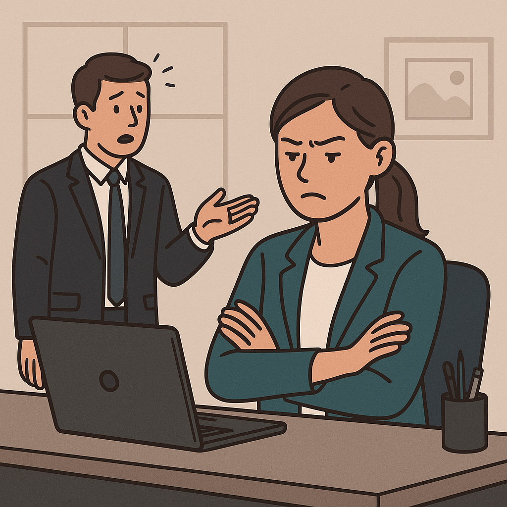

Common Stress Signs
Sign 1: Physical Symptoms
Don’t ignore these early signs. Small stress signals can quickly grow into bigger health issues. If these signs persist or get worse, seek professional support.
Sign 2: Emotional Changes
Emotional signs of stress can appear gradually and may vary from person to person. You might feel more sensitive, defensive, or even detached from others. Over time, unprocessed emotions can build up and affect how you perceive everyday events.
- Feeling easily irritated or overwhelmed by minor issues
- Experiencing frequent mood swings or bursts of anger
- Loss of motivation or interest in things once enjoyed
- Feeling anxious, restless, or emotionally drained

Sign 3: Behavior Signs
Sign 4: Cognitive Effects
Stress doesn’t just affect the body. It also clouds the mind. When under pressure, your brain can become overloaded, making it harder to think clearly or make rational decisions. Long-term exposure to stress hormones can even impair concentration and memory retention.
- Difficulty concentrating on tasks or remembering simple details
- Racing thoughts or constant mental replay of worries
- Feeling indecisive or second-guessing simple choices
- Reduced problem-solving ability and creativity
Sign 5: Work-Related Signs